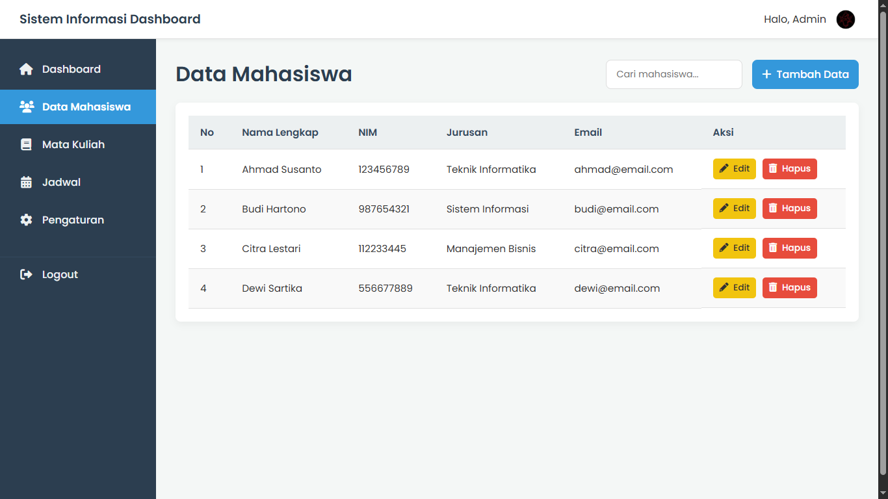

Template Dashboard & Tabel Data
Tentang Template Ini
Ini adalah template standar profesional yang menggabungkan layout dashboard utama (Header, Sidebar, Konten) dengan halaman antarmuka CRUD (Create, Read, Update, Delete) yang fungsional.
Template ini sempurna untuk halaman "Manajemen Data" pada sistem informasi apa pun. Desainnya bersih, menampilkan tabel data yang rapi, dan menyertakan komponen UI penting seperti *search bar*, tombol "Tambah Data", serta tombol "Edit" dan "Hapus" di setiap baris data.
Fitur Utama:
- Layout Dashboard Lengkap (Header, Sidebar, Konten)
- Halaman Tabel Data Profesional (CRUD Interface)
- Header Konten (Judul, Search Bar, Tombol Tambah Data)
- Desain Tabel Modern (Zebra-striped & Efek Hover)
- Tombol Aksi per baris (Edit & Hapus) dengan Ikon
- Dibangun dengan CSS Grid untuk layout utama yang kokoh
- Sidebar Navigasi Tetap (Sticky)
- Area Konten bisa di-scroll secara independen
Teknologi yang Digunakan:
- HTML5
- CSS3 (Grid, Flexbox, Sticky Position)
- Font Awesome (Untuk Ikon)
- Google Fonts (Poppins)